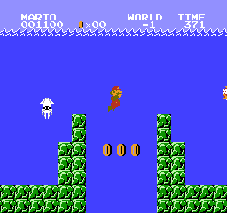
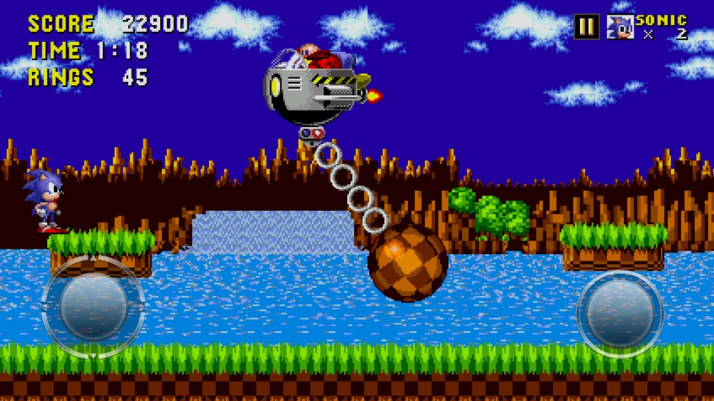
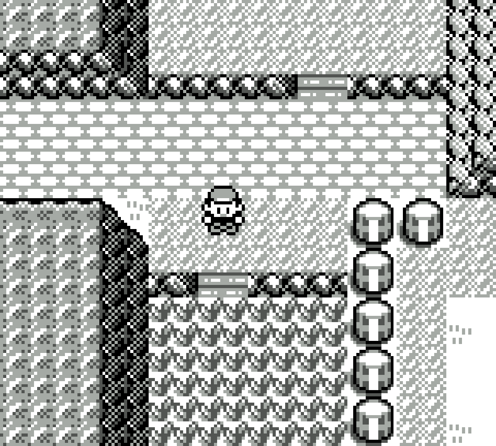
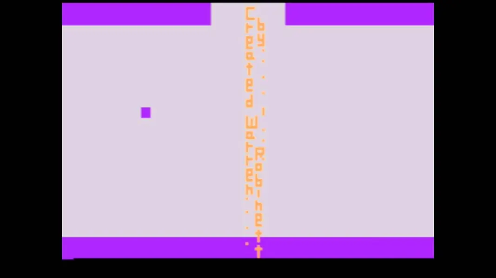

this website is for bridging the gap between the modern gamers and old games
random facts

the minus world is a famous code glitch where the game misreads its memory, trapping Mario in an endless underwater loop with no exit.

Early playtesters of sonic kept crashing from Sonic's extreme speed, but Sega refused to slow down creating a '90s gaming legend.

Skeptics doubted Western players would embrace creature collecting in Pokemon-Red-and-Blue. Then came 1998 and Pokémon defined an entire generation of gaming.

When Atari banned developer credits, one creator hid his name in a secret room—sparking gaming's very first "Easter egg."
Time passes, people move. Like a river's flow, it never ends. A childish mind will turn to noble ambition.